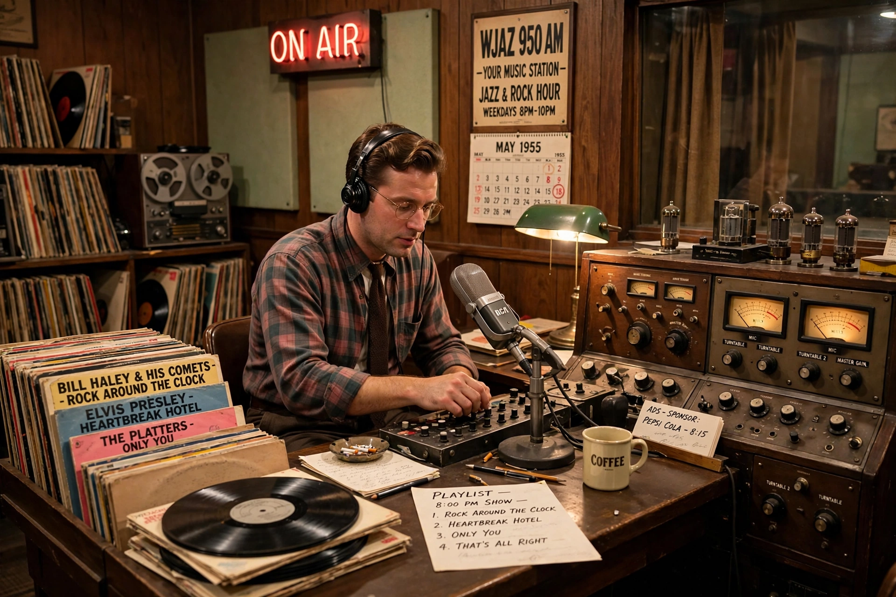

Payola
| Payola | |
| Type | Undisclosed paid promotion |
|---|---|
| Industries | Radio, music |
| Legal status | Illegal if undisclosed (US) |

Payola, a blend of "pay" and "Victrola", is the practice of paying radio stations or disc jockeys to play a song, or otherwise promoting music, without disclosing the payment to listeners. It is illegal in the United States under the Communications Act when sponsorship is not announced.
The 1950s scandal
Payola became a national scandal in 1959–60, when congressional hearings investigated payments to disc jockeys in the rock-and-roll era. The career of influential DJ Alan Freed, who popularised the term "rock and roll", was destroyed; Dick Clark survived after divesting his music interests. Congress amended the law in 1960 to require disclosure and criminalise payments made without a station's knowledge.
Modern forms
Labels adapted by paying independent promoters who in turn paid stations. Investigations in the 2000s led to settlements by major labels and broadcasters. In the streaming era, analogous practices include playlist placement deals and discounted-royalty "discovery" programmes, which have drawn renewed regulatory debate.
See also: Alan Freed, Plugola.